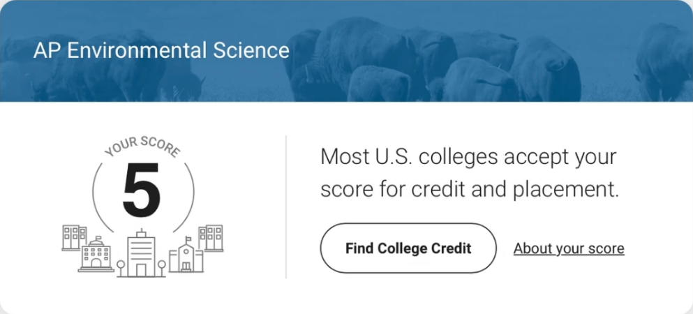

AP ENVIRONMENTAL SCIENCE · COURSE OVERVIEW
[Course intro placeholder] Core content of AP Environmental Science Unit 1.
[Course intro placeholder] Core content of AP Environmental Science Unit 2.
[Course intro placeholder] Core content of AP Environmental Science Unit 3.
[Course intro placeholder] Core content of AP Environmental Science Unit 4.
[Course intro placeholder] Core content of AP Environmental Science Unit 5.
[Course intro placeholder] Core content of AP Environmental Science Unit 6.
[Course intro placeholder] Core content of AP Environmental Science Unit 7.
[Course intro placeholder] Core content of AP Environmental Science Unit 8.
[Course intro placeholder] Core content of AP Environmental Science Unit 9.
College Board Course and Exam Description